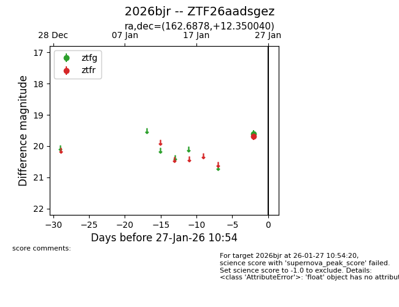
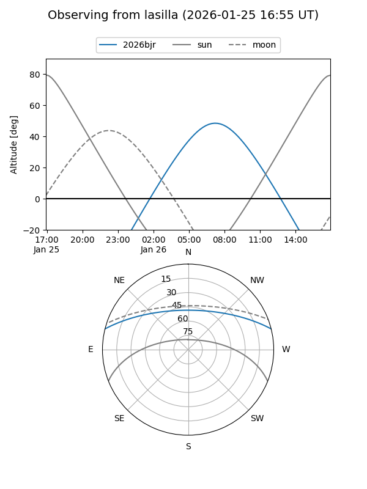
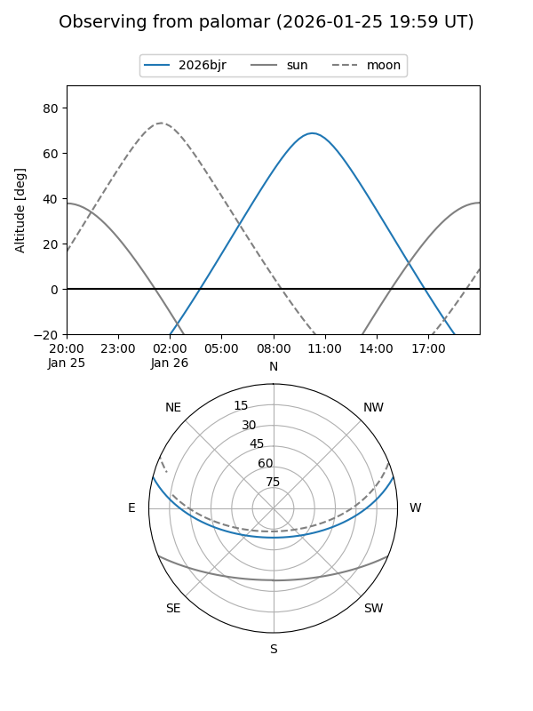

2026bjr
Target 2026bjr at 2026-01-25 23:06
Aliases and brokers:
FINK: link
Lasair: link
ALeRCE: link
TNS: link
YSE: link
alt names
ZTF26aadsgez (ztf,fink_ztf)
2026bjr (tns,yse)
Coordinates:
equatorial (ra, dec) = 162.6878,+12.35004
equatorial (HMS+DMS) = 10:50:45.07,+12:21:00.14
galactic (l, b) = (234.5669,+58.11802)
Flags:
Photometry:
last ztfr=19.68
1 ztfr detections
Lightcurve

Visibility


Additional plots